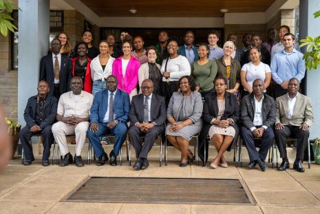
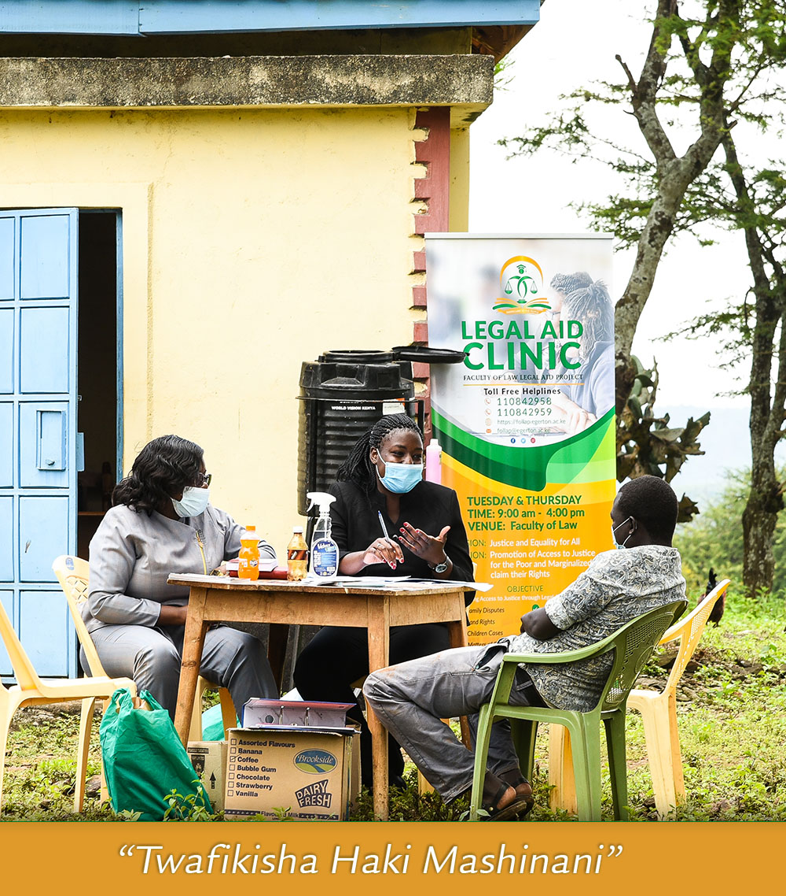

LAW BLOGS
In Kenya, the Government has developed and adopted policies and enacted laws to protect children.

UNICEF approach on issue about child labour can be seen as it works with the Kenyan government to advocate for......
In accordance to the Basic Education Act (2013), Research has shown that access to free primary education.....

The Children Act (2001,) which was revised in 2022 serves as the primary legislative framework protecting children’s rights in Kenya